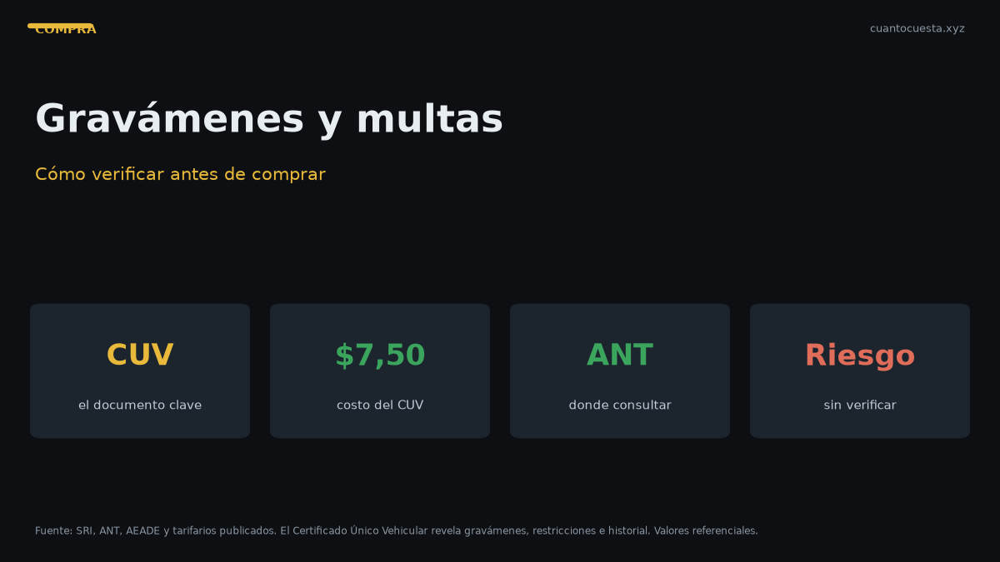

Cómo verificar que un carro usado no tenga gravámenes ni multas en Ecuador
Cómo consultar gravámenes, reserva de dominio y multas de un carro usado en Ecuador antes de comprarlo, y qué hacer si aparece una deuda pendiente.

Para saber si un carro usado tiene gravámenes o multas en Ecuador debes consultar tres fuentes: el certificado único vehicular (CUV), la consulta de infracciones de la ANT y el registro de gravámenes del SRI. La consulta se puede hacer con la placa y cuesta poco o nada, y es el paso más importante antes de pagar cualquier anticipo.
Un auto con gravamen, reserva de dominio o multas pendientes no se puede transferir. Si ya pagaste y descubres el problema después, tu único camino es un reclamo legal contra el vendedor.
Qué es un gravamen
Un gravamen es una deuda que pesa sobre el vehículo y lo atará a su propietario hasta que se pague. No afecta el funcionamiento del auto, pero sí su libre transferencia: el vehículo responde por esa deuda.
Los gravámenes más frecuentes en Ecuador son:
- Reserva de dominio: el banco o la financiera es dueño legal del auto hasta que termines de pagar el crédito. Lo más común en vehículos comprados a crédito.
- Prenda o hipoteca: el auto se usó como garantía de un crédito personal o comercial.
- Embargo: una autoridad judicial retuvo el vehículo por deudas del propietario.
- Prohibición de enajenar: el auto no se puede vender mientras exista esa restricción.
La reserva de dominio es el gravamen más común y el más engañoso. El vendedor puede tener el auto en su posesión y conducirlo todos los días, pero mientras el crédito no esté saldado el dueño legal es la financiera. Ese auto no se puede traspasar.
El certificado único vehicular (CUV)
El CUV es el documento oficial que concentra la información registral del vehículo: propietario, características, número de motor y chasis, y el estado legal de restricciones. Es la consulta más directa para saber si el auto está libre.
En el CUV deberías poder confirmar:
| Dato | Qué confirma |
|---|---|
| Propietario registrado | Que quien vende es el dueño legal |
| Número de motor y chasis | Que coinciden con el vehículo físico |
| Restricciones vigentes | Si hay gravamen, embargo o prohibición |
| Características | Color, modelo, año y cilindraje registrados |
| Estado del trámite | Si la matrícula está vigente y sin observaciones |
El CUV también es requisito habitual en el traspaso de dominio, así que pedirlo no es una desconfianza excesiva: es parte normal del proceso.
Dónde consultar cada cosa
| Qué verificar | Dónde se consulta | Qué necesitas |
|---|---|---|
| Gravámenes y reserva de dominio | Registro de la propiedad / SRI | Placa o número de chasis |
| CUV | Entidad de registro vehicular | Placa y cédula del titular |
| Multas e infracciones de tránsito | Sistema de la ANT | Placa |
| Avalúo para el impuesto del 1% | SRI | Placa |
| Historial de revisiones técnicas | ANT | Placa |
Las consultas en línea cambian de dirección y de requisitos con frecuencia. Confirma en la página oficial del SRI y de la ANT cuál es el canal vigente en tu ciudad antes de asumir que una consulta puntual sigue vigente.
Cómo saber si tiene reserva de dominio
Además de la consulta registral, hay señales de contexto que apuntan a un crédito vigente:
- El vendedor no tiene la matrícula original "porque está en el banco": casi siempre significa reserva de dominio activa.
- El auto se vende muy por debajo del precio de mercado: puede ser un intento de traspasar la deuda al comprador.
- Insiste en vender rápido y sin traspaso, o propone "firmamos un papel y luego hacemos el trámite".
- El propietario en los documentos es una persona distinta al vendedor, una financiera o una empresa.
- Aparece un tercero en la negociación que dice ser "el que maneja el crédito".
Si el auto tiene reserva de dominio, la operación solo se puede cerrar cuando el crédito esté cancelado y el levantamiento del gravamen esté efectivamente registrado. No basta con que el vendedor te muestre un comprobante de pago: el registro debe estar actualizado.
Multas e infracciones pendientes
Las multas de tránsito no bloquean el uso del auto, pero sí bloquean el traspaso. Antes de cerrar la compra, revisa:
- Infracciones registradas con la placa en el sistema de la ANT.
- Multas en proceso de impugnación — pueden reaparecer meses después.
- Fotomultas en corredores y cámaras de velocidad.
- Pensiones o tasas municipales pendientes del vehículo.
Si el total de multas es alto, negocia que el vendedor las pague antes de firmar. Una vez hecha la transferencia, la discusión sobre quién las causó se vuelve un pleito civil.
Qué hacer si aparece una deuda
Antes de pagar
- Detén la compra. No entregues anticipo ni señal con el gravamen o las multas a la vista.
- Exige el levantamiento del gravamen y su constancia en el registro actualizado.
- Verifica que la deuda esté realmente cancelada consultando de nuevo, no solo viendo el comprobante del vendedor.
- Revisa que no queden multas pendientes en el sistema de la ANT.
- Retoma la compra solo cuando las consultas salgan limpias.
Después de pagar
- Reúne evidencia: contrato de compraventa, comprobantes de pago, conversaciones y la consulta que muestra la deuda.
- Notifica por escrito al vendedor exigiéndole la cancelación del gravamen o la devolución del dinero.
- Busca asesoría legal si no responde. Sin traspaso hecho, el auto sigue a nombre del vendedor y tienes argumentos para reclamar la resolución del contrato.
- No circules indefinidamente con el auto a nombre de otro. Si tienes un accidente, las consecuencias legales recaen sobre el titular registrado y el proceso se complica para las dos partes.
- Reporta el caso ante la autoridad competente si hay indicios de estafa.
Orden correcto de verificación
- Placa y cédula del vendedor en mano.
- Consulta de gravámenes y restricciones.
- Consulta del CUV y verificación de motor y chasis.
- Consulta de multas e infracciones.
- Revisión mecánica en taller de confianza.
- Negociación del precio sobre el avalúo del SRI.
- Contrato de compraventa legalizado y firmado.
- Traspaso de dominio el mismo día, con el impuesto del 1% pagado.
Cierra todo el proceso el mismo día. El traspaso de dominio requiere cédula de ambos, certificado de votación, formulario de transferencia, matrícula o CUV, contrato legalizado, certificado de improntas y no tener infracciones pendientes. Si falta un solo documento, el auto queda a nombre del vendedor —y con él, los riesgos.
Resumen práctico
- Consulta gravámenes, CUV y multas antes de pagar cualquier anticipo.
- Un gravamen o una multa pendiente bloquea el traspaso de dominio.
- La reserva de dominio significa que el auto pertenece a la financiera hasta que el crédito se salde y el levantamiento se registre.
- El traspaso se hace con impuesto del 1% sobre el mayor valor entre el precio del contrato y el avalúo del SRI.
- Exige traspaso el mismo día; nunca compres "con papeles pendientes".
- Los canales de consulta y los requisitos son referenciales y cambian entre ciudades. Confirma en el SRI y la ANT antes de actuar. Esta guía es informativa y no reemplaza asesoría legal.
Sigue leyendo
Cómo detectar un carro chocado o inundado en Ecuador
Señales de pintura repintada, óxido en zonas raras, olor a humedad y tornillería marcada: cómo
Cuántos kilómetros dura un motor en Ecuador y cómo alargar su vida útil
Un motor bien mantenido dura 200.000-300.000 km. Cómo afectan la altura de la sierra y el tráfi
Precio justo de un carro usado en Ecuador: cómo calcularlo antes de negociar
Método de depreciación anual, uso del avalúo del SRI y señales de estafa para calcular y negoci
Qué revisar antes de comprar un carro usado en Ecuador (checklist completo)
Checklist mecánico, documentos y pruebas para revisar un carro usado en Ecuador antes de pagar:
Transferencia de dominio en Ecuador: pasos, tiempos y errores comunes
Transferencia de dominio en Ecuador: tiempos reales, por qué se cae el trámite (multas, gravame
Cómo usamos estos datos
Las cifras de esta guía provienen de fuentes públicas oficiales y tarifarios de concesionarios publicados. Los valores son referenciales: tasas municipales, promociones y precios de repuestos varían. Verifica siempre en la entidad o concesionario antes de decidir.